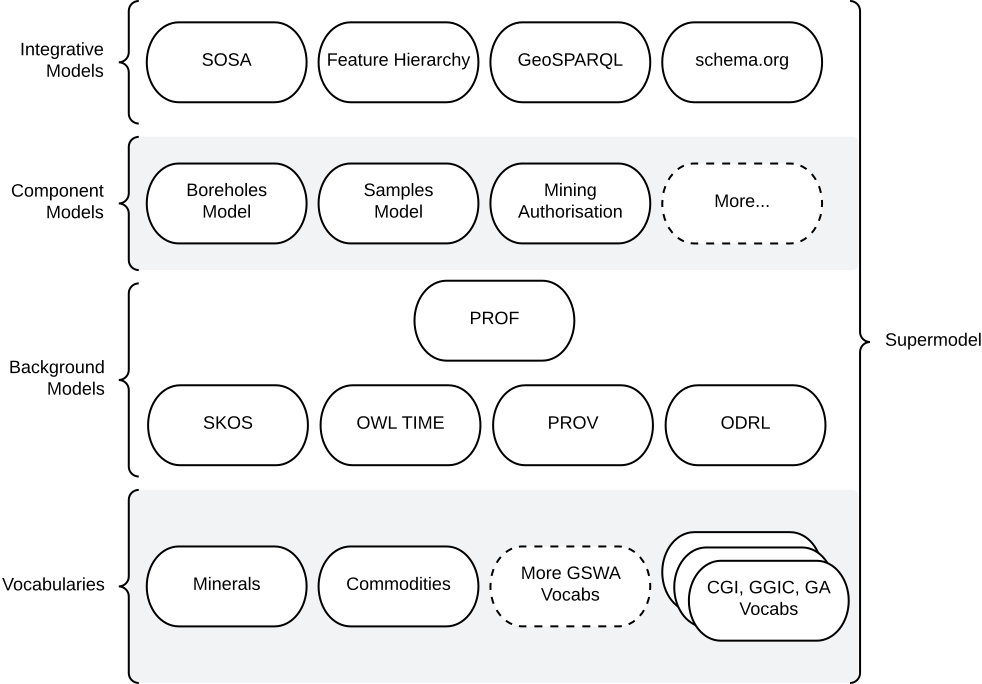
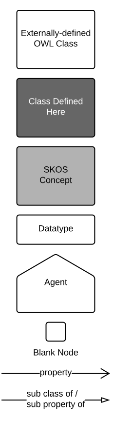

The Supermodel
Overview
This is a documentation website for a Supermodel: a multi-part enterprise data model.
This particular Supermodel is for a public expression of the data holdings of the Geological Survey of Western Australia.
| Question | Answer |
|---|---|
| What is a Supermodel, in detail? | See the next few sections See the generic description of a Supermodel |
| What is the status of this Supermodel? | See Status below |
| What other Supermodels? | See the Related Supermodels section of this Supermodel's description |

Introduction
This "Supermodel" is a multipart model used to coordinate expressions of data from multiple systems within the Geological Survey of WA (GSWA). Specifically, this model allows for:
- integration of data across systems
- multi-system data holding analytics
- system rationalisation planning
- delivery of coordinated/interoperable data
The major parts of this Supermodel are shown in Figure S1 above.
Only a few of the total Vocabularies and Component Models of this Supermodel have so far been defined: see the status in Overview/Status.
Related Supermodels
This Supermodel relates to several other Supermodels. The table below gives some details.
| Supermodel | Relationship |
|---|---|
| Foundational Spatial Data Framework Supermodel | The FSDF Supermodel was created by Geoscience Australia to integrate multiple foundational spatial datasets within Australia. It specifies both a structure for spatial data and particular fundamental objects to join datasets with, such as authoritative boundaries for Australia and the states. This supermodel adopts the FSDF Supermodel ways of working for spatial data |
| Geological Survey of Queensland's Supermodel | A Supermodel for a similar agency to GSWA. It implements many of the same Background Models, Vocabularies and some of the same Component Models, such as Boreholes |
| Environmental Information Australia Supermodel | An emerging Supermodel that includes a series of national environmental datasets across several Federal government agencies. It shares many background models that cover sampling, sites, spatiality, projects etc. |
Supermodel Structure
The structure of this Supermodel follows the Supermodel Model and consists of:
- Backbone Model
- the high-level model that joins all the Component Models together
- Component Models
- the detailed models for major datasets held by GSWA
- Background Models
- models that the Backbone and Component models extend to implement generic patterns and keep aligned
- Vocabularies
- controlled lists of terms used by all of the above models
- the various models all indicate which vocabularies they rely on
- see GSWA's vocabularies online
Additionally, this Supermodel contains the following model support content:
- PID Policy
- a policy for the creation of Persistent Identifiers (PIDs) for all the models within this Supermodel and any data created to conform to these models
Technical Assets
All parts of this Supermodel, for example individual Component Models or supporting vocabularies, are outlined here in human-readable form (documentation) and their machine-readable forms for such as their schema and data validators are linked to as well.
Within the formal definition of this Supermodel , all the 'resources' of the Supermodel parts are listed and the roles that each play are given. See the Supermodel Definition.
Supermodel Definition
The machine-readable definition of this Supermodel is a Turtle file, online at:
Its content is rendered in human-readable form as follows:
| Resource | Role | Description |
|---|---|---|
| Supermodel Definition | Profile | The formal definition of this Supermodel, including all its parts |
| Component Models | ||
| Bore Model | Component Model | A model that describes physical, functional and operational aspects of Bores, sometimes known as Wells. |
| Background Models | ||
| Vocabularies |
Modelling Documentation
The following subsections apply to all models linked to and within this Supermodel.
Diagram Conventions
All the models within this Supermodel are visualised with informal OWL diagrams. These are diagrams that represent the Classes, Properties and Axioms of the Web Ontology Language with the elements shown in Figure K below.

Namespaces
Namespaces provide unique identity to elements within this Model - classes, predicates, validation shapes and example data. Prefixes for namespaces are used to assist with documentation readability.
Where you see a prefix used, something like xxx:, it is to be replaced with the namespace for complete term definition. For example, using the table below, we can understand that bore:Bore is equivalent to https://linked.data.gov.au/def/borehole/Bore.
The following prefixed namespaces are used in class and property definition tables and the code examples following:
| Prefix | Namespace | Description |
|---|---|---|
ex |
http://example.com/ |
Non-resolvable namespace for examples |
bore |
https://linked.data.gov.au/def/bore/ |
The namespace for the Bore Model |
dcat |
http://www.w3.org/ns/dcat# |
Data Catalogue vocabulary: cataloguing international standard |
dcterms |
http://purl.org/dc/terms/ |
Dublin Core Terms: basic library catalogue-style metadata |
geo |
http://www.opengis.net/ont/geosparql# |
GeoSPARQL: Semantic Web spatial data international standard |
prov |
http://www.w3.org/ns/prov# |
Provenance Ontology: provenance data structures international standard |
rdfs |
http://www.w3.org/2000/01/rdf-schema# |
RDF Schema vocabulary: Basic structural RDF elements |
schema |
https://schema.org/ |
The general-purpose schema.org model |
skos |
http://www.w3.org/2004/02/skos/core# |
Simple Knowledge Organization System: a model for controlled vocabularies |
xsd |
http://www.w3.org/2001/XMLSchema# |
XML Schema Definitions Datatypes |
These namespaces appear at the start of RDF data files in the Turtle format (see next subsection) and SPARQL query text (the section after the next section) in a form similar to this table, for example in the schema for the Bore Model you can see the prefix borefor its namespace on the first line:
PREFIX bore: <https://linked.data.gov.au/def/bore/>
RDF code
Many examples for the models within this Supermodel and all machine-readable assets are stored in the Turtle format. This format is a compact representation of RDF data and is generally considered to be the most human-readable form that raw RDF data can take.
An example:
ex:b-01
a bore:Bore ;
schema:depth [
a schema:QuantitativeValue
schema:value 239 ;
schema:unitCode unit:M ;
] ;
.
In the example above (from the Bore Model's Quantitative Value class), we have a dummy ID for an instance of a Bore - ex:b-01 - with its class indicated - ex:b-01 a bore:Bore - and its depth given as a nested object, indicated by the predicate schema:depth:
[
a schema:QuantitativeValue
schema:value 239 ;
schema:unitCode unit:M ;
]
The nested depth object above is a Blank Node, that is an object whose ID we don't need to know because it's a child object of something else.
All the prefixes in this code such as ex: and schema: are defined in the Namespaces section above and are expanded when this code is read by machine to full values, e.g.
ex:b-01 → <http://example.com/ex:b-01>
SPARQL queries
The SPARQL query language is the standard way to query Knowledge Graph's RDF data. SPARQL queries, which look a lot like SQL queries, specify a pattern that is used to extract part from a larger Knowledge Graph, a "subgraph".
For example, if we have the following data:
ex:b-01
a bore:Bore ;
schema:location ex:Kimberleys ;
schema:depth [
a schema:QuantitativeValue
schema:value 239 ;
schema:unitCode unit:M ;
] ;
.
ex:b-02
a bore:Bore ;
schema:location ex:Plibara ;
schema:depth [
a schema:QuantitativeValue
schema:value 1073 ;
schema:unitCode unit:M ;
] ;
.
ex:b-03
a bore:Bore ;
schema:location ex:Plibara ;
schema:depth [
a schema:QuantitativeValue
schema:value 38 ;
schema:unitCode unit:M ;
] ;
.
Then the following query may be applied:
SELECT ?bh
WHERE {
?bh
a bore:Bore ;
schema:location ex:Plibara ;
schema:depth/schema:value ?depthValue ;
.
FILTER (?depthValue > 100)
}
The above query will extract objects of class Bore - ?bh a bore:Bore - with location of ex:Plibara and depth greater than 100. The result will be the ID of ex:b-02.
Status
August 2024
This Supermodel is forming the backbone to the integration of multiple datasets in GSWA, such as MINEDEX & WAGIMS, that have not always been easy to crosswalk, as well as using up-and-coming national geosciene models, such as the Bores Model and the proposed GGIC Geochemistry Data Model.
Currently, as of August 2024, the individual models of this Supermodel that have been established are listed in the Component Models to the left.
License & Rights
This repository's content is available for reuse according to the Creative Commons Attribution 4.0 International (CC BY 4.0).
This content is copyright as follows:
Contacts
This Supermodel is being authored for the Geological Survey of Western Australia within the Department of Mines, Industry Regulation and Safety.
For technical matters, please contact:
Nicholas Car
Geoscience Data Architect
Geological Survey of WA
Department of Mines, Industry Regulation and Safety
nick.car@dmirs.wa.gov.au
https://orcid.org/0000-0002-8742-7730
For other matters, please contact:
Geological Survey of Western Australia
https://dmp.wa.gov.au/Geological-Survey/Geological-Survey-262.aspx